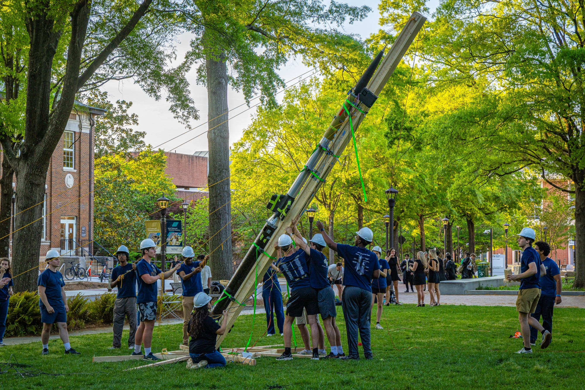
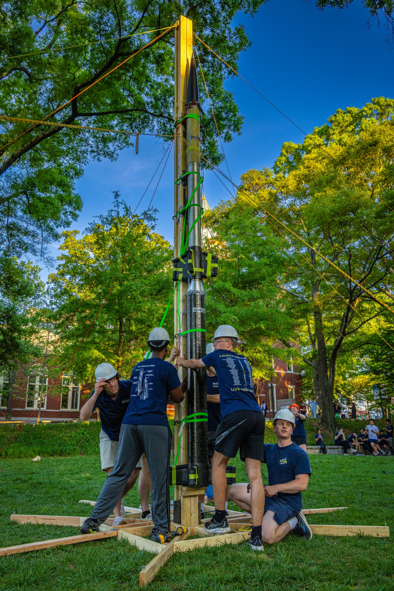
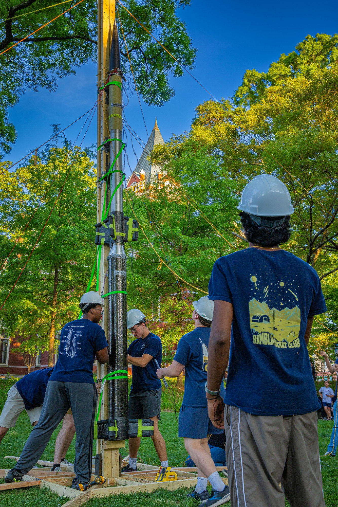
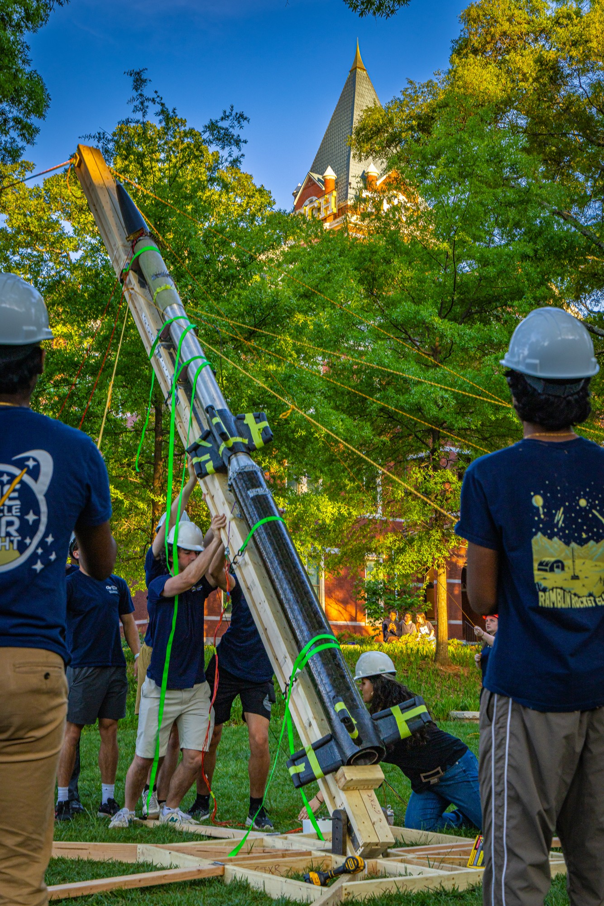
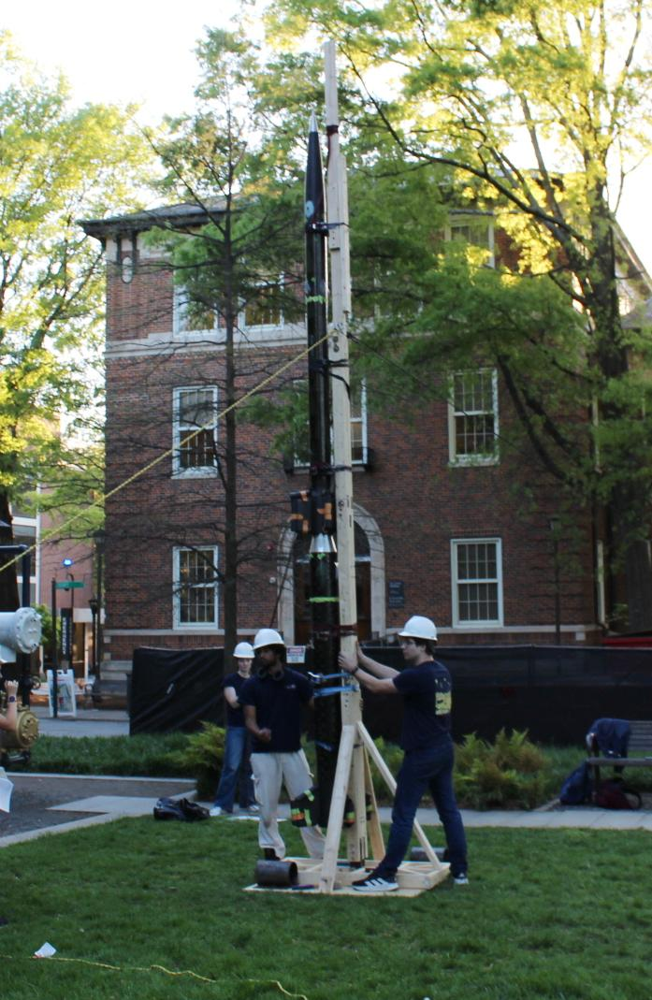
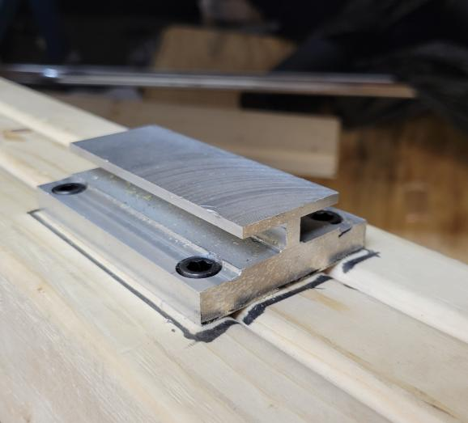

GTXR / Test hardware
Mock launch rail development
Reinforcing the rail and stabilizing the vehicle during full-assembly raising rehearsals.


The problem: flexure during raising
All-up rehearsals raise the rail with the assembled rocket attached to practice the operation. The original rail bent substantially, lacked straightness, and did not hold the rocket sufficiently still during raising. Its structural rigidity was inadequate for the task.
My contribution to the redesign
The team assigned the following semester's GTXR intern to design the second-generation rail. Together with the structures lead, I recommended an I-beam cross section for the central post and a larger base. The intern incorporated both recommendations into the redesign.
A reinforced post and wider base
V2 incorporated a large I-beam cross section into the central post that raises with the rocket. The larger base expanded the support footprint.




Stay cables for alignment and handling
The team used stay cables to keep the rail upright and straight and to assist with raising and lowering. The photographs document the V2 hardware in use during an all-up rehearsal.


V1: original mock-test hardware
For the original rail, I completed bending and buckling checks, CAD, and fabrication in wood, steel, and aluminum. The two-week build produced the first mock-test rail. Experience during all-up rehearsals exposed the limitations that motivated V2.



